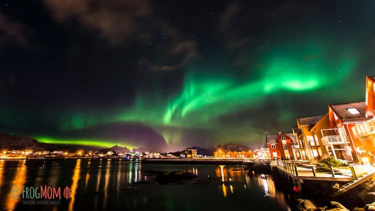

My favorite city is Tromso in Norway. Tromso is my favorite place because of its incredible natural beauty and unforgettable experiences. What attracts me the most is the breathtaking Northern Lights, which paint the night sky with beautiful waves of green, blue, and purple colors. I would love to stand under the glowing sky and witness this magical phenomenon in person. I also admire the snowy mountains, beautiful fjords, and peaceful surroundings that make the city feel unique and relaxing. The combination of stunning scenery and Arctic beauty makes Tromsø a place I would truly love to visit.
